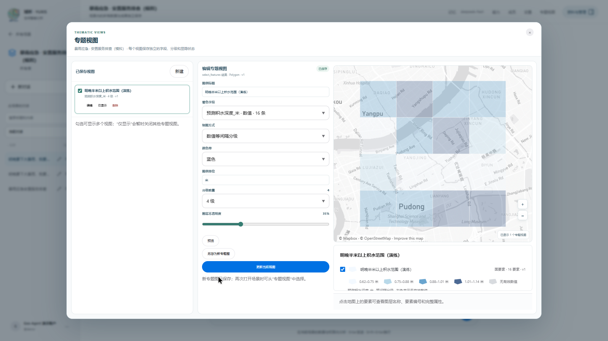
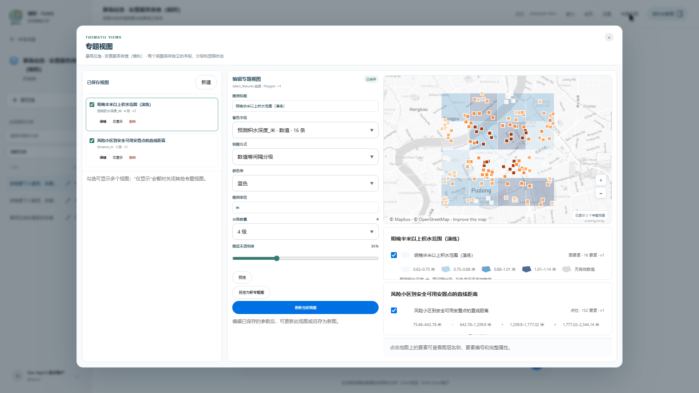
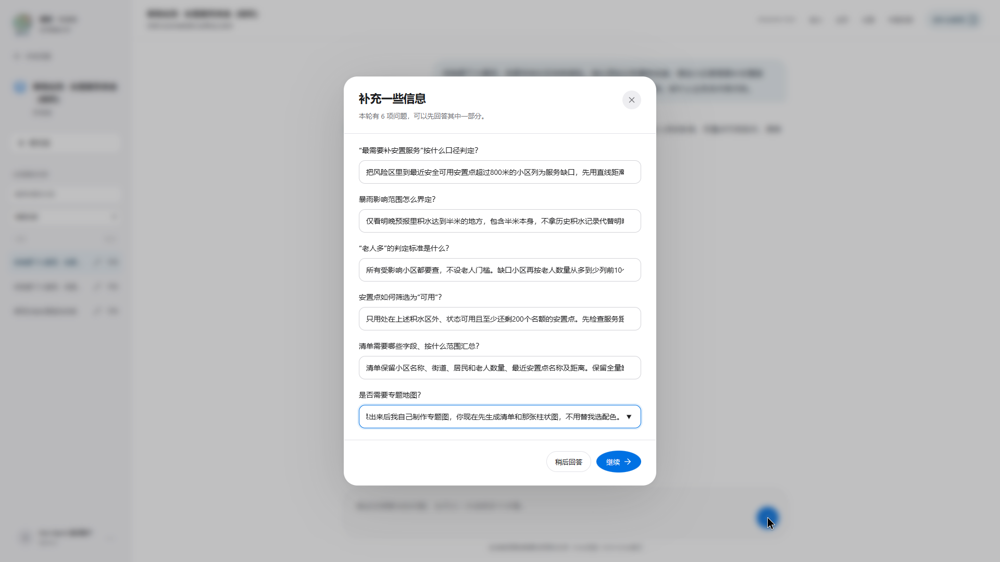

CASE 01 · 暴雨与安置服务
哪些小区需要补足避险服务？
从暴雨演练数据出发，找出需要优先核查的社区，并把老人较多的地方纳入街道清单。
用户原问题
明晚要下大暴雨，我要安排社区转移避险。请从原始台账重新排查：哪些小区最需要补安置服务，尤其别漏掉老人多的地方？给街道一份可以照着核查的清单。缺什么业务条件就问我。
数据规模
8 类、1,560 个模拟要素：街道分区、居民小区、积水预测、安置点、医疗点、道路、历史积水记录和物资仓库。
8 类演练数据
1,560模拟要素
480居民小区
演练结果 · 补服务核查线索
识别 16 个高风险积水单元和 152 个受影响小区；其中 131 个小区到最近合格安置点的直线距离超过 800 米。44 个容量合格的可用点里，40 个位于风险区外。
边界说明
全部为模拟数据，不代表真实预报。安置容量仅用于筛选资格，没有分配人口；直线距离不是道路、驾车或步行路线。


查看一次结果截图与完整数据说明

场景包括 24 个街道分区、480 个居民小区、48 个积水预测面、60 个应急安置点、36 个医疗服务点、180 条道路、720 条历史积水记录和 12 个物资仓库。前端确认风险范围、安置点资格、服务缺口距离和清单内容后，再开始计算。
案例展示问题澄清、筛选、空间距离检查、街道汇总和结果解释。所有情景均为演练数据。